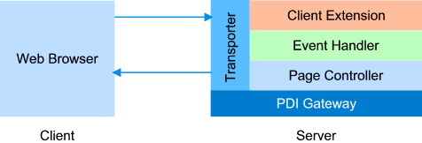

PDI is an event driven PHP/Ajax framework that is based on the MVC and Observer design patterns. It was designed to meet the needs of modern web application development while allowing clean separation of web application layers, easy re-use of business logic and parallel development by separate teams.
It is important to note that the core of the PDI Framework was inspired by the jQuery JavaScript library. In fact, most of the client/server communications are handled by jQuery. This means that if you're already familiar with basic methodology of jQuery, then you can easily adapt to the methodology and concepts of this framework.
Building on the web design philosophy of the separation of content from logic, PDI makes it very easy for you to separate your html views (or content) from page logic by storing all your html views inside a separate file folder.
Use the views folder to store your HTML, CSS, images and JavaScript files. Once you have created and separated your html files you can from within your page logic, load and process your views using the provided APIs.
A typical PDI web page normally includes a reference to the PDI gateway file and an instance of the RichWebPage class. The gateway file (raxan/pdi/gateway.php) is used to load the main PDI classes that are used by the framework. These classes include RichAPI, RichWebPage, RichElement, RichPlugin and RichDataSanitizer. The RichWebPage class is responsible for collecting, processing and responding to a client's page request.
<?php
include_once('raxan/pdi/gateway.php'); // include the PDI gateway
$page = new RichWebPage(); // create an instance of the RichWebPage class
$page->content('Hello World'); // set the content of the page
$page->reply(); // reply to the request
?>
Note: The first new instance of the RichWebPage class is called the Page Controller and can be accessed by calling the RichWebPage::Controller() method.
In addition to the RichWebPage class, there are four other globally accessible functions that are available to developers. These functions are wrappers or shortcuts to commonly used objects or methods. Calling this method will automatically create an instance of the RichWebPage class if a Page Controller was not found.
P() - This function provides a reference the default page controller, which is normally the first instance of the RichWebPage class.
<?php
P()->append('Hi there!');
?>
C() - This provides a reference to the RichClientExtension class, which is used to generate and execute client-side action scripts. These action scripts are normally jQuery commands that are executed within the client's browser. Calling this method will automatically create an instance of the RichClientExtension class and load the Raxan startup and jQuery libraries.
<?php
C('#box')->fadeOut();
?>
_fn() - Generates a client-side function and returns a reference to the function, which can then be passed to other action script commands. For Example:
<?php
$cb = _fn('alert("Hello")');
C('body')->click($cb);
?>
_var() - Generates a client-side JavaScript variable and returns a reference to the variable, which can then be passed to other action script commands
<?php
$v = _var(array(1,2,3,4));
C()->alert($v);
?>
_event() - Generates a client-side function that's used to trigger a server-side event and returns a reference the function, which can be passed to other action script commands.
<?php
require_once('raxan/pdi/gateway.php');
$page = new RichWebPage();
if (!$page->isPostback)
C()->confirm("Are you sure you want to continue?",_event('ok'),_event('cancel'));
// register the 'ok' and 'cancel' page events
$page->registerEvent('ok', 'ok_show');
$page->registerEvent('cancel', 'cancel_show');
function ok_show($e){
$e->page()->content('Welcome to the Online Demo...');
}
function cancel_show($e){
$e->page()->content('Goodbye!');
}
$page->reply();
?>
Note: For more information about the above global functions see the RichWebPage class reference.
Chainable server-side DOM Traversing and Manipulation functions make it very easy to search and modify your html views using simple CSS-selectors. Change HTML tag attributes with a single line of code:
<?php
$page['img#Photo']->attr('alt', 'The World')->css('width',250);
?>
When a client makes a request to view a PDI enabled web page, the framework will load your Page-Controller logic and allow you to load and process your html views using simple css selectors (for example #id, .classname, etc). Once processing is completed, a reply is sent back to the client that made the request. The replied text contains your html code and may include embedded javascript/css stylesheet.
If a request was made via an ajax call, then a JSON object is returned to the client. The returned JSON object may include the action scripts (a mixed of jQuery and JavaScripts) needed to carry out a specific task within the client's web browser.
In order to receive special event notifications when your page is being processed, you will have to extend the RichWebPage class and create custom web Page Controller .
For example, the code below uses the _load() event to modify the content of the web page:
<?php
class MyPage extends RichWebPage {
protected function _load() {
$this['body']->append('Hello World');
}
}
RichWebPage::Init('MyPage'); // create and initialize an instance of MyPage
?>
Client/Server Event Binding is what makes the Raxan PDI framework truly special. Imagine never having to write a single line of JavaScript code in order to receive an Ajax notification when a user clicked on a button. Imagine being able to bind your server-side event handler to just about any HTML tag inside your web page. The possibilities are endless when you realize that you have total control over every DOM element inside your client's web browser.
Every JavaScript developer knows that he or she will often times have to write JavaScript code to send data to the server. However, with Raxan PDI, that's a rare occurrence. In fact, getting data or receiving an event notification from the client is very straightforward. The simplest way to do this is to use the bind() method to listen to events being triggered from the client.
<?php
class MyPage extends RichWebPage {
protected function _load() {
// add some content to the page
$this->content('<input id="mybutton" type="button" value="Click Me" /><div id="msg" />');
// bind a callback function to the mybutton input element
$this['#mybutton']->bind('click','.button_click');
// note the dot (.) in .button_click - This tells the framework to look for
// the button_click function the current page object.
}
// callback function
protected function button_click($e) {
// select the #msg element and set html to hello world
$this['#msg']->html('Hello World');
}
}
RichWebPage::Init('MyPage');
?>
The bind() method can accept three different types of event handler callback functions:
In addition, the bind() method can also accept optional values that can be used to determine the data returned by the client or actions that should be carried out just before or after and event call:
<?php
$this['#button']->bind('#click',array(
'callback' => '.auto_search',
'autoDisable' => true, // disable the button during event call to server
'autoToggle' => 'img#pre', // show pre loader
'serialize' => 'form :input' // serialize ad post all form inputs back to the server
));
?>
Note: The delay, autoDisable and autoToggle options are were added since release 1.0 Beta 1
When the event handler is called, an instance of the RichEvent object is passed as the first parameter with the following properties:
Server-side events can be triggered by using the framework's API, client-side scripts, form submits or hyperlinks. By sending special name/value pairs to the server via either POST or GET methods you can make a request to invoke an event within the application. Here's a list of some of the event name/value pairs used when making a request:
_e[target] - Target element id _e[type] - Event Name - Defaults to click _e[value] - (Optional) Value to be passed to the event _e[tok] - Special token to be sent to server. This entry is optional if the event was registered using @global. By default the PDI framework automatically assigns this value. An example of how to use an hyperlink to manually invoke a server-side event:
<a href="order.php?_e[target]=page&_e[type]=saveorder">Submit Order</a>
It's important to note that the framework has a built-in security feature that helps to prevent Cross-Site Request Forgery (CSRF). Each event request must be accompanied with a valid token id. This token is unique to the user's active browser session and will be destroyed once the browser is closed. Handling a Server-side Event
Handling a server-side event is very simple and straight forward. All that's required is your event handler (or callback) function or object and a call to one of the three available event binding functions.
The bind() method can be used to automatically bind a server-side event handler to the client-side click event of the selected element:
<?php
$page['#button']->bind('click','myEventHandler');
?>
The delegate() method is similar to the bind() method. The only exception is that it will delegate and redirect a client-side event to a server-side event handler:
<?php
$page['#list td a']->delegate('click','myEventHandler');
?>
This will register an event for the current page and bind the event to a callback handler:
<?php
$page->registerEvent('click','myEventHandler');
?>
See General Topics for more information and examples on how to use the PDI framework.